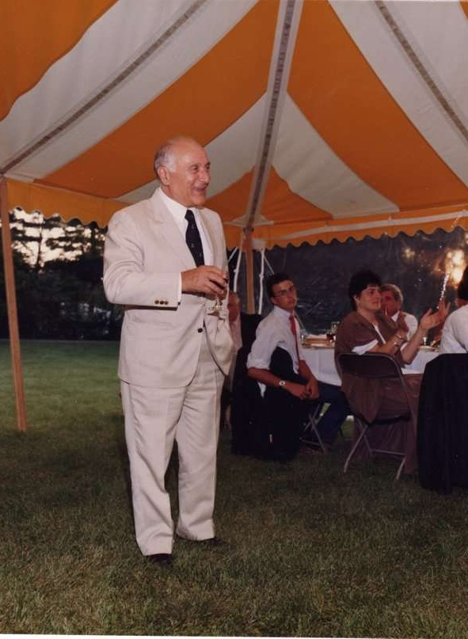
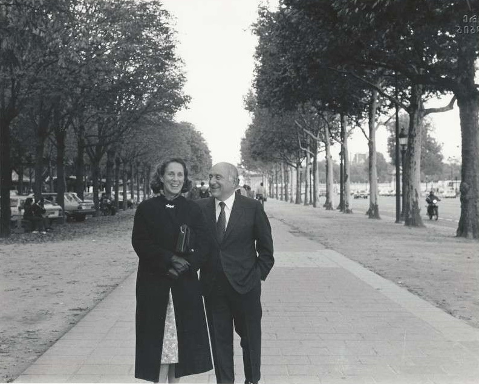

Othar
Zaldastani

Early Life and Education:
- 1922: Born in Tbilisi, Georgia.
- 1925: Emigrates to France with his family.
- 1945: Graduates from the École Nationale des Ponts et Chaussées (Paris School of Roads and Bridges).
- Influenced by: Works of Georgian scientists Muskhelishvili and Vekua.
Academic and Research Career:
- 1946: Earns Master's degree from Harvard University.
- 1947-1950: Professor at the Massachusetts Institute of Technology and Harvard University.
- 1950: Receives Doctorate in Science from Harvard, specializing in aerodynamics and soil mechanics.
- Throughout career: Authors numerous theoretical works and invents new construction methods.
- Research: Lays the groundwork for future projects like the Palm Jumeirah.

Engineering
Career
- 1946: Starts working at Harvard University.
- 1948: Moves to Boston and begins consulting work at Nichols and Norton.
- 1949-1952: Consultant at Nichols and Norton.
- 1952: Becomes a partner, forming "Nichols, Norton and Zaldastani."
- 1964-1989: President of "Zaldastani Association" in Boston.
- 1971: Changes firm name to "Zaldastani Associates Incorporated."
- 1989-1997: Chairman of the Board of Directors of Zaldastani Associates Inc.
-
Over a lifetime: leads a team of 25 engineers to design and
implement over 1,000 structures worldwide, including:
- Hotel: Copley Place
- Airport: Boston International Airport
- Stadiums: Fenway Park, Harvard University Stadium, and Brown University Stadium
- University Projects: Reconstruction of "Moihan" University auditorium
- Government buildings: Palaces in Washington D.C. and other US cities
- International Projects: Multi-storey buildings in Iraq, Algeria, Saudi Arabia, and France
- Memorials: U.S. Memorial at the Normandy landing site
- Artificial Island Project: Palm Jumeirah in Dubai (designed in 2002)
Key Achievements and Innovations
- Pioneered: Use of artificial soil creation in construction projects.
- Developed: Techniques for optimizing highway space utilization.
- Received numerous awards: Recognized as one of America's best engineers.
- Holds patents: Including a prestressed concrete beam and deck system.
Leadership in the Georgian Community
- 1958-1965: Elected president of the Georgian Association in the United States.
- Throughout career: Actively involved in preserving Georgian culture and heritage.
- Contributes to: Securing official recognition for the Georgian Association.
- Supports: Establishment of the American Academy in Tbilisi.
- Facilitates: Educational opportunities for Georgian students in the US.
Personal Life
- 1963: Marries Elizabeth Reily Bailey.
- Has three children: Elizabeth, Anne, and Alexander.
- 2005: Passes away.

Legacy
- Daughter, Elizabeth Zaldastan: Serves as president of the Georgian Association (1995-2001).
- Son, Nicholas Zaldastan: Works in the construction industry.
- Remembered as: Brilliant scientist, accomplished engineer, and dedicated advocate for the Georgian community.
Additional Notes
- 1997: Awarded Honorary Citizenship by the Georgian government.
- His contributions to: Engineering and the Georgian community remain largely unknown in Georgia.